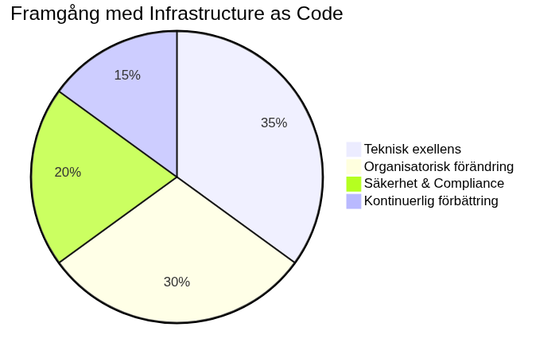

Conclusion

Architecture as Code has transformed how organisationer think about and handles IT-infrastructure. Through treating Architecture as Code has vi enabled same precision, processes and quality controls as long existed within software development. This journey genAbout the Books 25 chapter has shown the way from Fundamental Concepts to future advanced technologies.
Viktiga lessons from vår Architecture as Code-journey
implementation of Architecture as Code requires both technical excellence and organisatorisk change. successful transformations are characterized of strong management commitment, comprehensive training programs and gradual inforandestrategi as minimizes disruptions of existing operations, according to the principles vi explored in chapter 16 about organizational change.
The technical aspect of Architecture as Code requires deep understanding for cloud technologies, Architecture as Code-automation tools and security principles as vi covered from Fundamental principles through advanced policy as code. simultaneously is organizational factors often crucial for success, including cultural change, competence development and process standardization.
Progressionen through technical maturity
Vår throughgång började with Fundamental Concepts as declarative code and idempotens in chapter 2, utvecklades through praktiska Architecture as Code-implementationsaspekter that version control and CI/CD-automation, and kulminerade in advanced topics that containerorkestrering and framtida AI-driven automation.
Säkerhetsaspekterna as introducerades in chapter 10 fordjupades through policy as code and compliance-handling, which shows how security must throughsyra entire Architecture as Code-Architecture as Code-implementationen from design to drift.
Svenska organisationers unique utmaningar and possibilities
GenAbout the Books chapter has vi sett how Swedish organizations stands infor specific Challenges and possibilities:
- GDPR and data sovereignty: From säkerhetskapitlet to policy implementation has vi sett how svenska/EU-regulations requires particular attention at dataskydd and compliance
- Klimatmål and sustainability: Framtidskapitlet belyste how Sveriges klimatneutralitetsmål 2045 driver innovation within carbon-aware computing and sustainable infrastructure
- Digitaliseringsstrategi: chapter 19 about digitalisering visade how Architecture as Code enables The digitala transformation as Swedish organizations undergoes
Framtida development and teknologiska trender
Cloud-native technologies, edge computing and artificiell intelligens driver next generation of Architecture as Code, which vi explored in-depth in chapter 20 about framtida trender. Emerging technologies that GitOps, policy engines and intelligent automation will to ytterligare simplify and improve Architecture as Code-capabilities.
Utvecklingen mot serverless computing and fully managed services forändrar what as needs is managed that Architecture as Code. Framtiden pekar mot higher abstraktion where Developers focuses on business logic with plattformen handles underliggande architecture automatically, which vi saw exemplifierat in diskussionen about Platform Engineering.
Machine learning-baserade optimeringar will to enable intelligent resource allocation, kostnadsprediktering and säkerhetshotsdetektion. This creates självläkande systems as kontinuerligt optimerar itself based on usage patterns and performance-metrics, according to the AI-drivna principerna from framtidskapitlet.
Kvantteknologi and säkerhetsutmaningar as vi diskuterade in chapter 19, requires kvantdatorers development proaktiv forberedelse for post-quantum cryptography transition. Swedish organizations with critical security requirements must börja planera for quantum-safe transitions nu, which bygger vidare at the security principles as etablerades in chapter 6 and chapter 12.
Hybrid classical-quantum systems will to emerge where kvantdatorer is used for specific optimerungsproblem with klassiska systems handles general computing workloads. Infrastructure orchestration must support båda paradigmen sömlöst.
Recommendations for organisationer
Baserat at vår throughgång from Fundamental principles to advanced implementations, should organisationer påbörja their Architecture as Code-journey with pilot projects as demonstrerar value without to riskera critical systems. Investment in team education and tool standardization is critical for long-term success and adoption across organisationen, according to the strategier as beskrevs in chapter 10 about organisatorisk change.
Stegvis implementationsstrategi
- Fundamental utbildning: Börja with to etablera understanding for Architecture as Code-principles and version control
- Pilotprojekt: Implementera CI/CD-pipelines for smaller, icke-critical systems
- Säkerhetsintegration: Etablera säkerhetspraxis and policy as code
- Skalning and automation: Utöka to containerorkestrering and advanced workflows
- Framtidsberedskap: Forbereda for emerging technologies and hållbarhetsrequirements
Etablering of center of excellence or platform teams can accelerera adoption by tohandahålla standardized tools, Architecture as Code best practices and support for utvecklingsteam. Governance frameworks ensures Security and compliance without to begränsa innovation and agility, which vi saw in compliance-kapitlet.
Continuous improvement and mätning
Continuous improvement culture is crucial where team regelbundet evaluater and improves sina Architecture as Code-processes. Metrics and monitoring helps to to identify forbättringwhichråden and mäta framsteg mot definierade goals, according to the praktiska examples as visades in DevOps-kapitlet and organisationskapitlet.
Investment in observability and monitoring from säkerhetskapitlet and praktiska implementationen enables data-driven decision making and continuous optimering of Architecture as Code-processes.
Slutord
Architecture as Code represents mer than only technical evolution - the is a fundamental change of how vi think about infrastructure. by embraca Architecture as Code-principles can organisationer achieve increased agility, reliability and scalability while the reduces operational kostnader and risker.
Vår journey through This bok - from introduktionen to Architecture as Code-konceptet, through technical implementationsdetaljer and praktiska utvecklingsprocesser, to advanced security strategies and framtida technologies - shows to Architecture as Code is both a technical discipline and a Organizational transformation.
successful implementation requires tålamod, uthållighet and commitment to continuous learning. Organisationer as investerar in to bygga robust Architecture as Code-capabilities position themselves for framtida teknologiska changes and konkurrensfordel at marknaden.
Avslutande reflektion
the principles as introducerades in bokens forsta chapter - declarative code, idempotens, testbarhet and automation - throughsyrar all aspects of modern infrastructure management. From Fundamental version control to AI-driven optimization, These fundamental principles forblir konstanta also when teknologierna is developed.
Swedish organizations has unique possibilities to leda within sustainable and compliant Architecture as Code implementation. by kombinera technical excellence with strong fokus at sustainability, security and regulatory compliance can Swedish companies and offentliga organisationer create competitive advantages as resonerar with nationella values and globala trender.
Bokens progression from teori to praktik, from Fundamental to avancerat, speglar The journey as each organisation must throughgå to lyckas with Architecture as Code. each chapter builds on previous knowledge and forbereder for mer complex Challenges - precis as a verklig Architecture as Code-implementation.
the way framåt
Architecture as Code is not a destination without a continuous journey of learning, experimentation and improvement. the tools, processes and principles as is described in This bok will to is developed, but the fundamental koncepten about code-driven infrastructure, automation and reproducibility will to forbli relevanta.
Which vi has sett genAbout the Books 23 chapter, from Fundamental introduction to framtida visioner, represents Architecture as Code framtiden for IT operations. Organisationer as investerar in This journey idag creates foundation for morgondagens digitala success.
Sources:
- Industry reports on Architecture as Code adoption trends
- Expert interviews and case studies
- Research on emerging technologies
- Best practice documentation from leading organizations